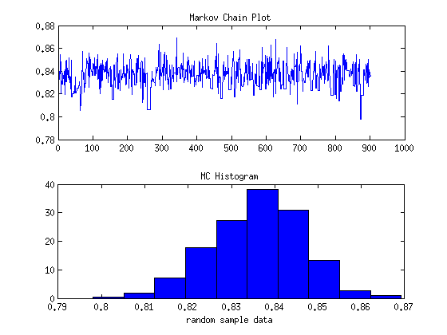

addpath ~/Documents/Stat572/CompStatsToolboxV2 load('Finalpr1.mat')
ESTIMATE PARAMETERS WITH EM ALGO initialize parameters
muin = [2 5]; piesin = [0.5 0.5]; varin = [1 1]; data = y; max_it = 100; tol = 0.001; % run EM [pies,mus,vars]=csfinmix(data,muin,varin,piesin,max_it,tol); % set up likelihood function likelihood = @(x,mu1,mu2,sigma1,sigma2,delta)... exp(sum(log(delta*normpdf(x,mu1,sqrt(sigma1))+... (1-delta)*normpdf(x,mu2,sqrt(sigma2)))));
GENERATE THE MC Generate n samples in the chain.
n = 1000; % random sample size burn = 0.1*n; % burn-in rate M = 100; % set up Monte Carlo iterations MCmu = zeros(M,1); MCvar = zeros(M,1); mixrate = zeros(M,1); % count the mix rate % OPTIMIZER BETAVAR = @(theta) theta(1)*theta(2)/((theta(1) + theta(2))^2*(theta(1)+... theta(2)+1))-0.000865; theta = fminsearch(BETAVAR,[1, 1]); scale = 10^15; for j = 1:M % initialize the chain mc = zeros(1,n); mc(1) = rand(1); % generate the starting point mixcount = 0; % count the mix rate for i = 2:n % generate a candidate from the chosen prior x = betarnd(theta(1)/scale,theta(2)/scale); % generate a uniform for comparison u = rand(1); alphaf = min([1, likelihood(data,mus(1),mus(2),vars(1),vars(2),x)/... (likelihood(data,mus(1),mus(2),vars(1),vars(2),mc(i-1)))]); if u <= alphaf mc(i) = x; mixcount = mixcount+1; else mc(i) = mc(i-1); end end MCmu(j) = mean(mc(burn:n)); MCvar(j) = var(mc(burn:n)); mixrate(j) = mixcount/n; end
PROVIDE HISTOGRAM
figure(1) subplot(211) plot(mc(burn:n)) title('Markov Chain Plot') [fhath, bc] = hist(mc(burn:n)); fhath = fhath/((bc(2)-bc(1))*sum(fhath)); subplot(212) bar(bc,fhath,1,'b') title('MC Histogram') xlabel('random sample data') % MIX RATE mixrate = mean(mixrate); % PROVIDE MC ESTIMATE OF MEAN AND VARIANCE MCxbar = mean(MCmu); MCssq = mean(MCvar); % CONSTRUCT 90% CI FOR MEAN OF DELTA % Get the value for z_alpha/2 alpha = 0.1; zlo = norminv(1-alpha/2,0,1); zhi = norminv(alpha/2,0,1); thetalo = MCxbar - zlo*sqrt(MCssq/n); thetaup = MCxbar - zhi*sqrt(MCssq/n); fprintf('\nThe Monte Carlo Estimate of the mean is %2.6f\n', MCxbar) fprintf('\nThe Monte Carlo Estimate of the variance is %2.6f\n', MCssq) fprintf('\nThe 90 percent Confidence Interval is: (%2.6f, %2.6f)\n',thetalo, thetaup) fprintf('\nThe mix rate is %2.2f percent.\n', mixrate*100)
The Monte Carlo Estimate of the mean is 0.835532 The Monte Carlo Estimate of the variance is 0.000120 The 90 percent Confidence Interval is: (0.834963, 0.836101) The mix rate is 63.86 percent.